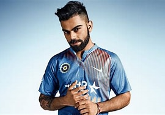
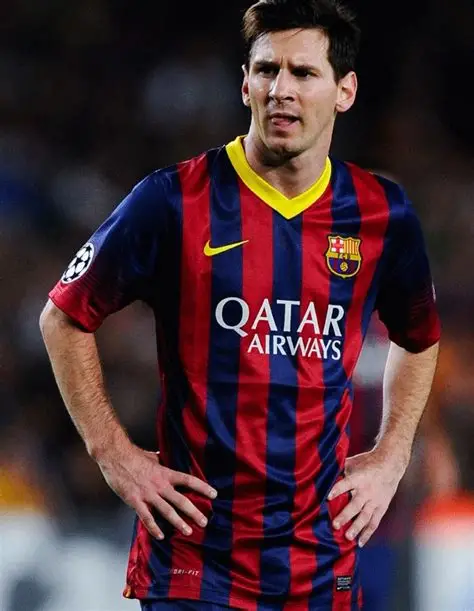

Discover the inspiring journeys of legendary athletes who have achieved greatness through dedication, hard work, and excellence in sports.

Born: 5 November 1988
Nationality: Indian
Profession: Cricketer
Virat Kohli is regarded as one of the greatest batsmen in modern cricket. He has captained India across all formats and has broken numerous batting records throughout his career.

Born: 24 June 1987
Nationality: Argentine
Profession: Football Player
Lionel Messi is widely regarded as one of the greatest football players of all time. His exceptional dribbling, vision, and goal-scoring ability have earned him worldwide recognition.